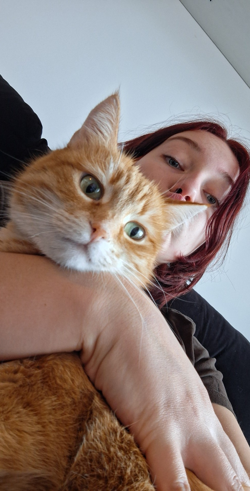
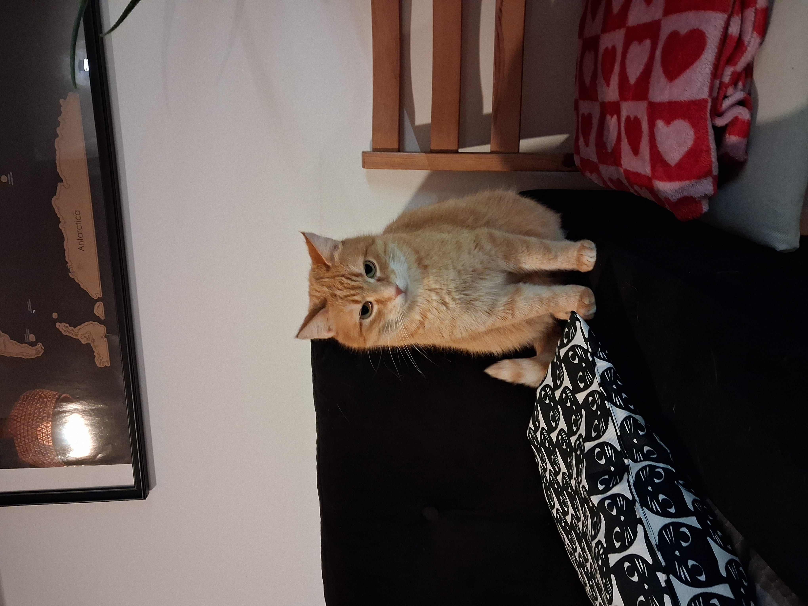
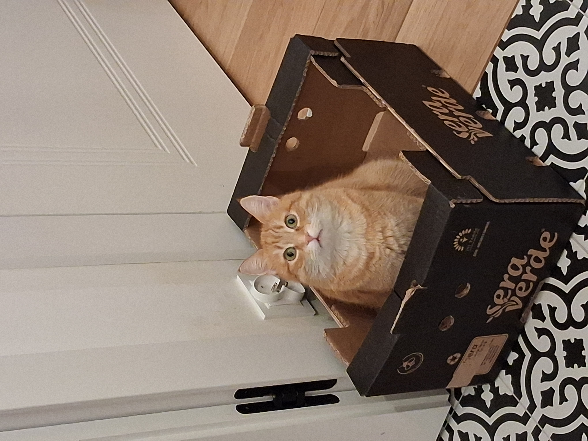
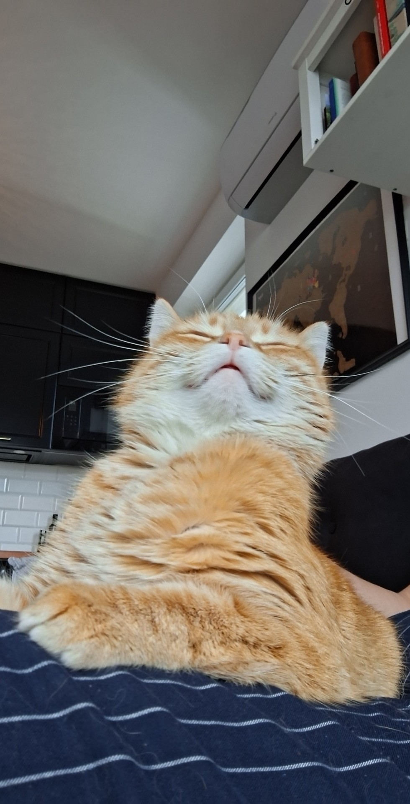

Kocia galeria
W tej galerii znajdziesz prawdziwą mieszankę kociego uroku w rudościach: od kultowych rudych kotów znanych z internetu i popkultury, przez zupełnie losowe, przypadkowe futrzaki, aż po mojego własnego kota, który dodaje całości najbardziej osobistego charakteru. Nie mogło tu też zabraknąć legend — jak wiecznie leniwy i uwielbiający lasagne Garfield, czy charyzmatyczny, nieco zadziorny bohater z dużymi oczami i jeszcze większym urokiem, czyli Kot w Butach. Razem tworzą to rudy świat kotów: od memicznych ikon, przez filmowe gwiazdy, aż po zwykłe-niezwykłe koty uchwycone w codziennych momentach.




